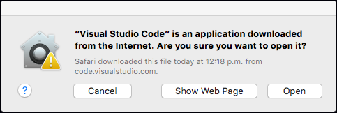
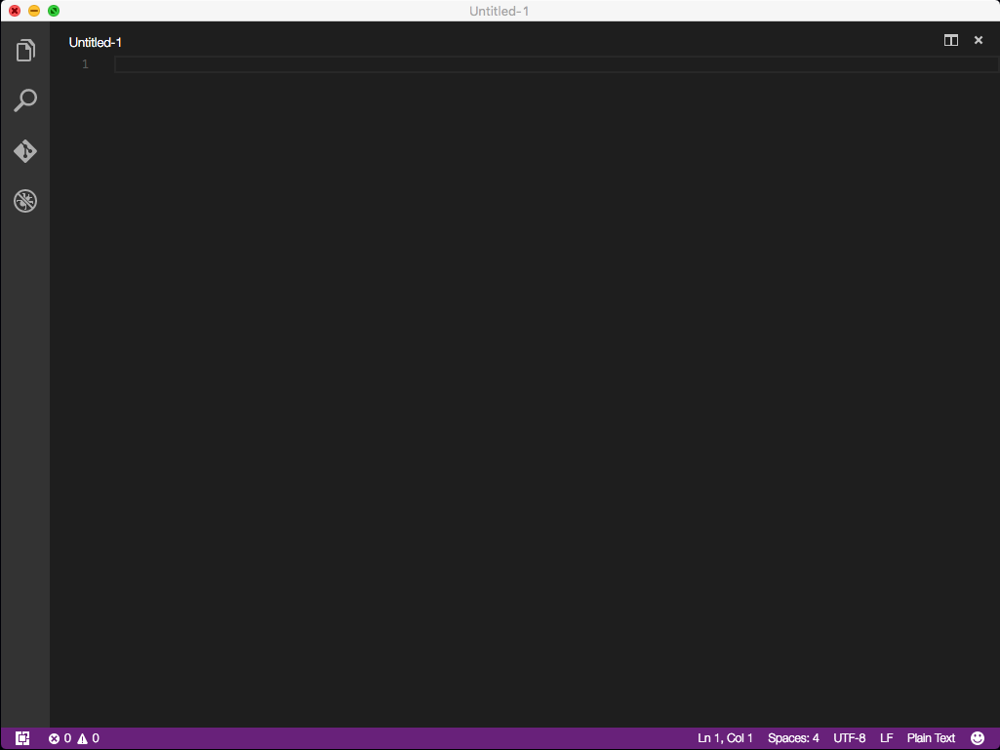
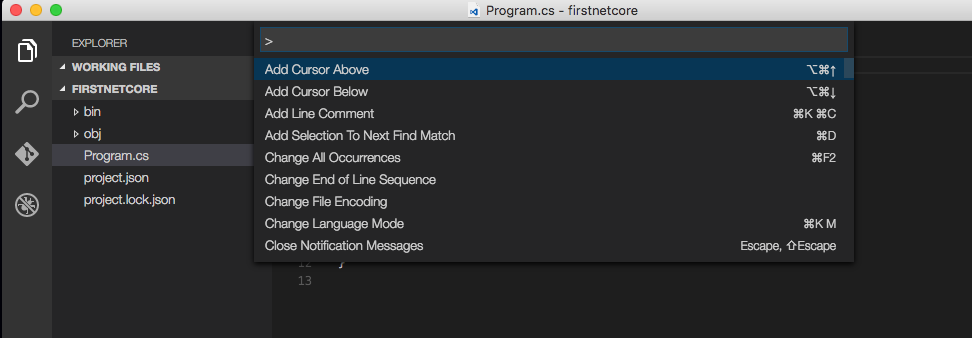
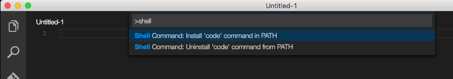
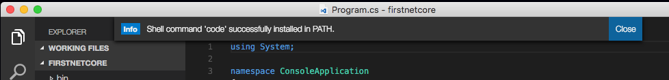

Installing Visual Studio Code on Mac OS X
-
Download packgage
Go to Visual Studio Code web site and click "Download for OS X" button.
If "Download for OS X" button doesn't show in big on the left of the page navigate to the bottom that has all platform download buttons
-
Install the package
-
Double-click the package (looks like a folder) in Downloads

-
Open package by clicking "Open"
 -
And it opens!
 -
A final touch
To be able to run Visual Studio from the Terminal (bash shell), it has to be installed in the system PATH. To do so:
-
Call the Visual Studio Code Command Palletter by pressing F!
 -
Write "shell"
-
Select "Shell Command: Install 'code' command in PATH"
Wait for this message:

-
-